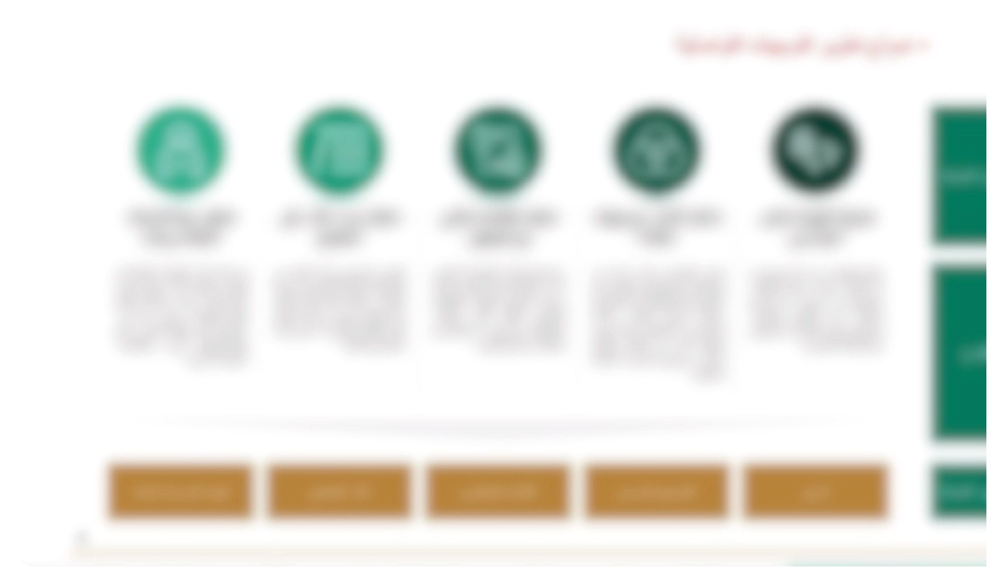

ريمات الرياض

الأثـر والنتـائـج
استراتيجية الاتصال وتكامل الأدوار
تعزيز وضوح هوية ريمات الرياض لدى الشركاء والجمهور، وتحديد دورها بدقة ضمن منظومة مدينة الرياض التنموية.
تقليل التداخل والارتباك في الرسائل الاتصالية مع أمانة الرياض والجهات الأخرى، بما يرفع من كفاءة التواصل ويمنع التضارب.
تمكين الشركة من بناء علاقات فاعلة ومستقرة مع شركاء القطاعين العام والخاص، عبر خطاب موحد يبرز أهدافها ومشاريعها التنموية.
بناء جاهزية مؤسسية عالية للتعامل مع الأزمات أو القضايا الإعلامية المحتملة، عبر خطط استباقية مدروسة.
زيادة وعي سكان وزوار مدينة الرياض بأدوار ريمات وخدماتها، بما يدعم صورة الشركة كمحرك للتنمية الحضرية الحديثة.
المخرجات
- مستند لفهم الوضع الراهن وتحليل التحديات الاتصالية المرتبطة بهوية ودور الشركة.
- توثيق مزايا الشركاء والفئات المستهدفة (أصحاب القرار، الجهات الداعمة، المجتمع، القطاع الخاص).
- خطة تنفيذية شاملة تتضمن ثلاث مسارات رئيسية:
1. خطة إدارة الأزمات والمخاطر الإعلامية.
2. مسار استراتيجيات منصات التواصل.
3. مسار حوكمة الظهور الإعلامي. - دراسة مرجعية لأفضل الممارسات الاتصالية في شركات التنمية الحضرية محليًا وعالميًا.